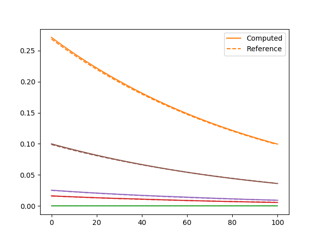

Linear Elasticity
In this example, we consider the linear elasticity problem. The strain stress relation is given by
where the linear elasticity matrix $H$ is given by
H = elements[1].mat[1].HThe data and geometry settings are from this section.
Analytical Solution
We can use SymPy.jl to generate the analytical solution
using SymPy
H = elements[1].mat[1].H
x, y, t = @vars x y t
u = 0.1*(1-y^2)*(x^2+y^2)*exp(-t)
v = 0.1* (1-y^2)*(x^2-y^2)*exp(-t)
ux = diff(u,x)
uy = diff(u,y)
vx = diff(v,x)
vy = diff(v,y)
ϵ = [ux;vy;uy+vx]
σ = H * ϵ
f1 = u - (diff(σ[1], x) + diff(σ[3], y))
f2 = v - (diff(σ[3], x) + diff(σ[2], y))
println(replace(replace(sympy.julia_code(f1), ".*"=>"*"), ".^"=>"^"))
println(replace(replace(sympy.julia_code(f2), ".*"=>"*"), ".^"=>"^"))
S = [σ[1] σ[3]
σ[3] σ[2]]
# edge function on domain 0
t1 = S * [-1.0;0.0]
# edge function on domain 1
t2 = S * [0;-1.0]
println(replace(replace(sympy.julia_code(t1[1]), ".*"=>"*"), ".^"=>"^"))
println(replace(replace(sympy.julia_code(t1[2]), ".*"=>"*"), ".^"=>"^"))
println(replace(replace(sympy.julia_code(t2[1]), ".*"=>"*"), ".^"=>"^"))
println(replace(replace(sympy.julia_code(t2[2]), ".*"=>"*"), ".^"=>"^"))
Forward Computation
To conduct forward computation using AD-enabled kernels, we need to precompute some data. This includes the boundary conditions and external force
# linear elasticity matrix at each Gauss point
Hs = zeros(domain.neles*length(domain.elements[1].weights), 3, 3)
for i = 1:size(Hs,1)
Hs[i,:,:] = elements[1].mat[1].H
end
# Construct Edge_func
function Edge_func_linear_elasticity(x, y, t, idx)
if idx==0
f1 = @. -6.41975308641975*x*(0.1 - 0.1*y^2)*exp(-t) + 3.45679012345679*y*(0.1 - 0.1*y^2)*exp(-t) + 0.345679012345679*y*(x^2 - y^2)*exp(-t)
f2 = @. -1.48148148148148*x*(0.1 - 0.1*y^2)*exp(-t) - 1.48148148148148*y*(0.1 - 0.1*y^2)*exp(-t) + 0.148148148148148*y*(x^2 + y^2)*exp(-t)
elseif idx==1
f1 = @. -1.48148148148148*x*(0.1 - 0.1*y^2)*exp(-t) - 1.48148148148148*y*(0.1 - 0.1*y^2)*exp(-t) + 0.148148148148148*y*(x^2 + y^2)*exp(-t)
f2 = @. -3.45679012345679*x*(0.1 - 0.1*y^2)*exp(-t) + 6.41975308641975*y*(0.1 - 0.1*y^2)*exp(-t) + 0.641975308641975*y*(x^2 - y^2)*exp(-t)
end
return [f1 f2]
end
globaldata.Edge_func = Edge_func_linear_elasticity
Finally, we can carry out forward computation
ts = ExplicitSolverTime(Δt, NT)
ubd, abd = compute_boundary_info(domain, globaldata, ts)
Fext = compute_external_force(domain, globaldata, ts)
d, v, a= ExplicitSolver(globaldata, domain, d0, v0, a0, Δt, NT, Hs, Fext, ubd, abd)
# # NOTE: You can also use the implicit alpha solvers
# ts = GeneralizedAlphaSolverTime(Δt, NT)
# ubd, abd = compute_boundary_info(domain, globaldata, ts)
# Fext = compute_external_force(domain, globaldata, ts)
# d, v, a= GeneralizedAlphaSolver(globaldata, domain, d0, v0, a0, Δt, NT, Hs, Fext, ubd, abd)
sess = Session(); init(sess)
d_, v_, a_ = run(sess, [d,v,a])The computation can be verified by comparing with exact solutions
using Random; Random.seed!(233)
for k = 1:5
i = rand(1:m+1)
j = rand(1:n+1)
if k==1
plot(d_[:,(j-1)*(m+1)+i], color = "C$k", label="Computed")
else
plot(d_[:,(j-1)*(m+1)+i], color = "C$k")
end
x0 = (i-1)*h
y0 = (j-1)*h
if k==1
plot((@. (1-y0^2)*(x0^2+y0^2)*exp(-ts))*0.1 ,"--", color="C$k", label="Reference")
else
plot((@. (1-y0^2)*(x0^2+y0^2)*exp(-ts))*0.1 ,"--", color="C$k")
end
end
legend()| Generalized $\alpha$ Scheme (Implicit) | Explicit Solver |
|---|---|
|  |
Calibration
Now assume that we do not know the Poisson's ratio or Young's modulus. To calibrate them, suppose we can collect data from the top left point. The inversion can be done within just a few lines of codes:
E = Variable(1.0)
ν = Variable(0.0)
H11 = E*(1. -ν)/((1+ν)*(1. -2. *ν));
H12 = H11*ν/(1-ν);
H21 = H12;
H22 = H11;
H33 = H11*0.5*(1. -2. *ν)/(1. -ν);
H = tensor(
[H11 H12 0.0
H21 H22 0.0
0.0 0.0 H33]
)
d, v, a= ExplicitSolver(globaldata, domain, d0, v0, a0, Δt, NT, H, Fext, ubd, abd)
idx = [1;domain.nnodes+1]
loss = sum((d[:, idx] - d_[:, idx])^2)
sess = Session(); init(sess)
BFGS!(sess, loss, var_to_bounds=Dict(E=>(0.0,100.0), ν=>(-0.5,0.49)))
run(sess, [E, ν])The estimated values are
The true values are